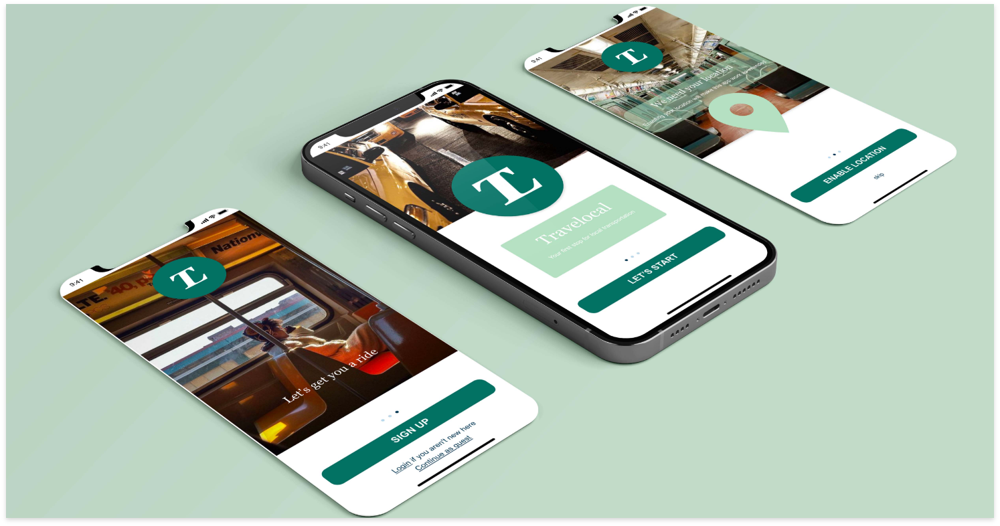
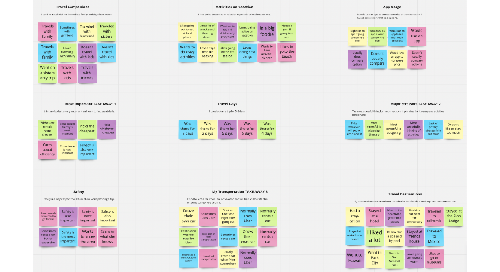
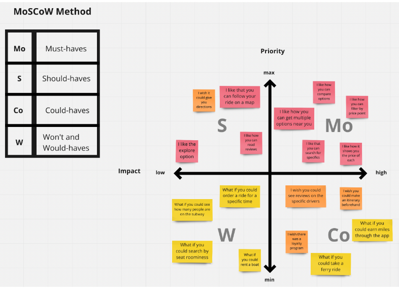
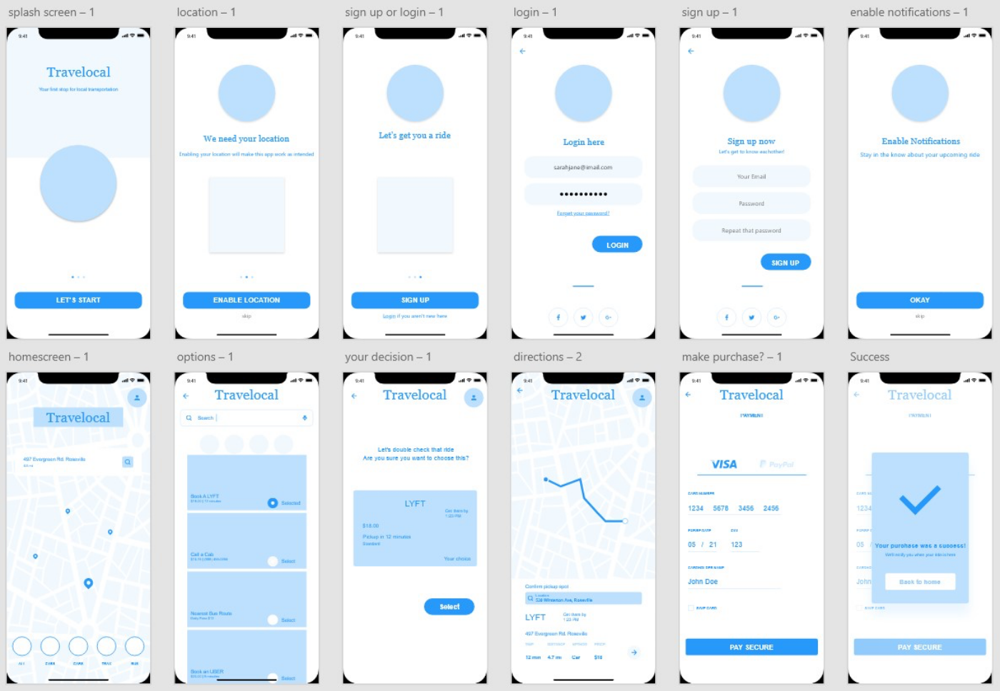
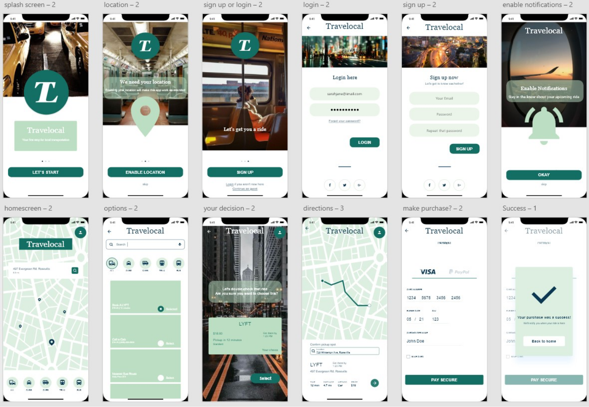

Travelocal

For my first project in my UX/UI bootcamp at the University of Utah I was tasked with creating a travel app that would solve a problem for the average traveler.
Find a problem that travelers have while on vacation. Do user testing and interviews to find out if there is a universal problem that more than half of my interviewees have. Create a prototype for an app that would solve that problem.
I learned how important it is to understand your potential users and the tools that are necessary in doing that. Such as affinity diagrams, the Moscow method, and brainstorming activities.
I began the design process by conducting primary and secondary research in order to better understand people’s pain points when traveling.
My assumption was that while on vacation people tend to use different modes of transportation while at their destination.
After thinking about my own pain points when traveling I thought of creating an app that would allow you to compare local transportation options in the city you are traveling. This would include modes of transport such as taxi cabs, Lyft/Uber, busses, and subways. By giving the ability of choice to the traveler, it would in a sense, let them custom pick rides to fit their exact needs. Whether that need be timeliness or budget friendliness. After interviews, user personas, scenarios and storyboards; along with many digital prototypes Travelocal was created.
I first made a survey with various questions about people’s past traveling experiences to better understand their general wants, needs, and issues. I had 85 people take my survey giving me a greater insight on potential users.
I then interviewed 5 participants about their existing travel behaviors, thoughts, and feelings to ask deeper questions instead of just surface level.
Based on my research and persona, I began to categorize and structure the information based on what was most useful.
I used the I Like, I Wish, I Want and the MoSCoW method to visualize the most important aspects of the app and what would be the most important to keep moving forward.
I started my wireframes with sketching a few screens using paper and pencil.
I then created a mid fidelity prototype on Adobe XD.
Lastly I made a high fidelity prototype of Travelocal.
For the next iteration of Travelocal I would create a higher fidelity prototype with animations, google maps, and more clickable resources. I would want to partner with local transportation systems in Utah like the Trax System to test out the apps features.